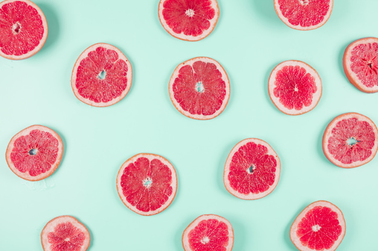
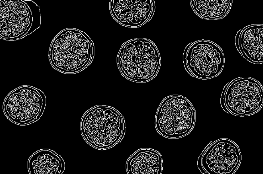
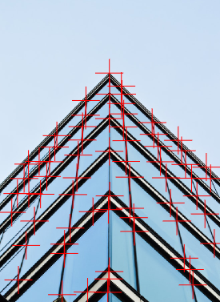

Nine Lessons Completed: Intro to Deep Learning with Keras, Web Scraping in Python, Data Communication Concepts, Image Processing in Python, GitHub Concepts, AI Fundamentals, Introduction to ChatGPT, Introduction to R, Intermediate R. Below are a few examples of what I thought was cool in these lessons. Obviously too much content was covered to display here.
Intro to Deep Learning with Keras
# Import the Sequential model and Dense layerimport tensorflowfrom tensorflow.keras.models import Sequentialfrom tensorflow.keras.layers import Dense# Create a Sequential modelmodel = Sequential()# Add an input layer and a hidden layer with 10 neuronsmodel.add(Dense(10, input_shape=(2,), activation="relu"))# Add a 1-neuron output layermodel.add(Dense(1))# Summarise your modelmodel.summary()
# Import the modules from skimage
from skimage import data, color
# Load the rocket image
rocket = data.rocket()
# Convert the image to grayscale
gray_scaled_rocket = color.rgb2gray(rocket)
# Show the original image
show_image(rocket, 'Original RGB image')
# Show the grayscale image
show_image(gray_scaled_rocket, 'Grayscale image')
Black and White Rocket

Grapefruit
# Import the canny edge detector
from skimage.feature import canny
# Convert image to grayscale
grapefruit = color.rgb2gray(grapefruit)
# Apply canny edge detector
canny_edges = canny(grapefruit)
# Show resulting image
show_image(canny_edges, "Edges with Canny")

Grapefruit Edges
Building
# Import the corner detector related functions and module
from skimage.feature import corner_harris, corner_peaks
# Convert image from RGB-3 to grayscale
building_image_gray = color.rgb2gray(building_image)
# Apply the detector to measure the possible corners
measure_image = corner_harris(building_image_gray)
# Find the peaks of the corners using the Harris detector
coords = corner_peaks(corner_harris(building_image_gray), min_distance=20, threshold_rel=0.02)
# Show original and resulting image with corners detected
show_image(building_image, "Original")
show_image_with_corners(building_image, coords)

Building Corners
I left out a lot of the cool images I got to make but I would definitely recommend Datacamp for people trying to learn data related topics with R, Python, and machine learning because I found these lessons very helpful and fun. I’m not sure how much it costs because it is provided through DSPG but I think it would be worth it to buy for a month or something and do as many lessons as possible during the summer or so.